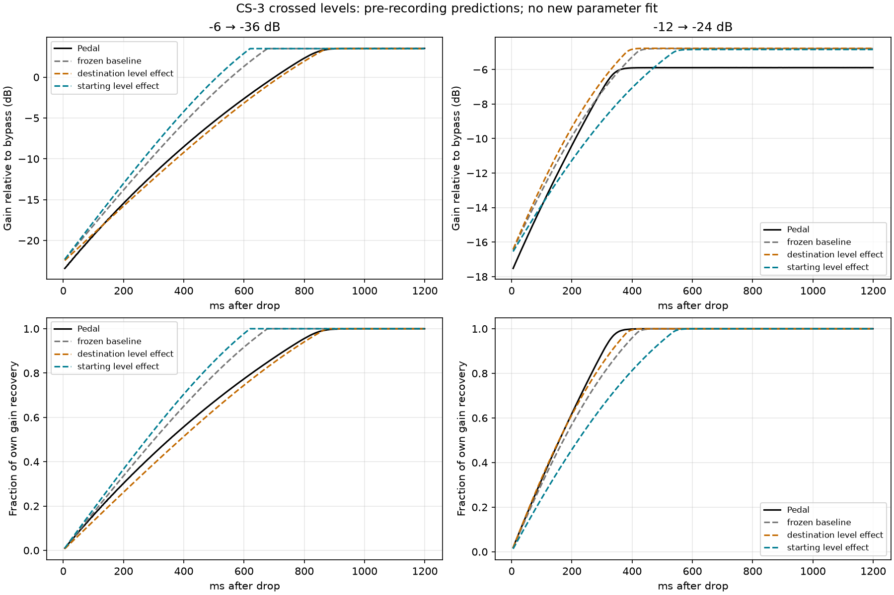
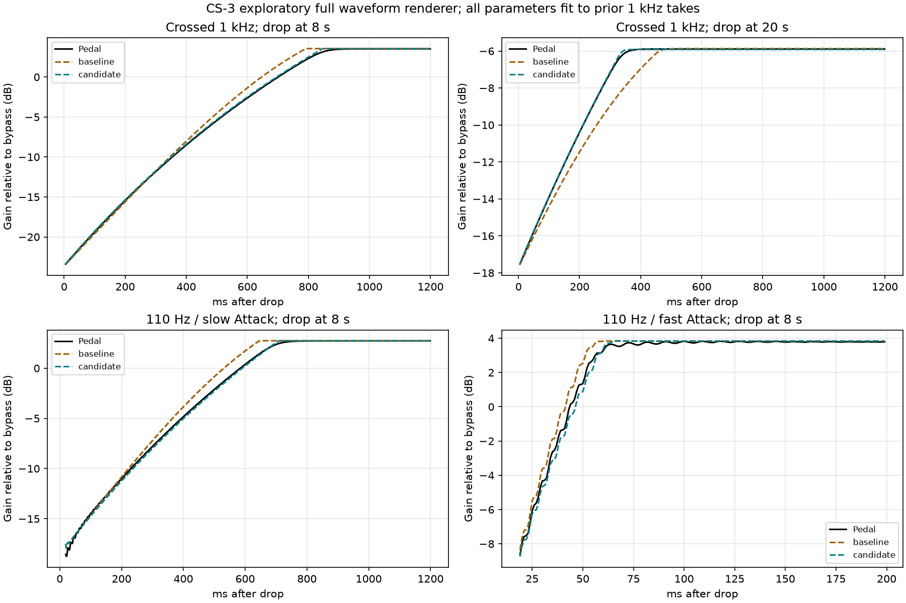
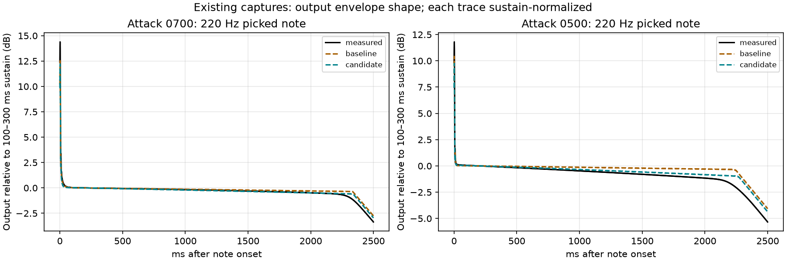

30 October 2026 · 48 kHz physical captures and offline numerical prototypes · Production DSP unchanged
Assessment: the new captures are useful. They confirm that the original fixed amplitude-release law does not generalize. Comparing whole curves reveals that a single curved recovery trajectory, stopped when the input recaptures the detector, explains the apparent destination dependence. A log-domain relaxation toward a fixed floor is a strong candidate for the release stage. It needs no extra detector state. The complete compressor is not ready to replace production: low-frequency gain/distortion and pick transients remain imperfect.
This continues the six-take detector study and collection audit. The frozen hypothesis test below was specified before recording. The new model family was selected after inspecting the crossed curves; its numerical parameters use the earlier 1 kHz recordings only. Its subsequent results are retrospective generalization checks, not a fresh blind validation.
The crossed plan adds a bypass and one engaged take: 1 kHz, four-second plateaus [−36, −6, −36, −24, −12, −24] dB relative to the guitar-peak reference. Attack returns to minimum; Level, Tone and Sustain remain at noon. Both played-float32 hashes match their sidecars, both report zero xruns and marker quality .998, and neither recording contains |x|≥.999. Tail noise is approximately −101 dBFS RMS on the pedal channel.
The engaged take's capture latency is 577 samples versus 455 for bypass. Each take is aligned using its own marker latency. After that compensation, all five loopback envelope edges agree on the 1 ms grid; settled loopback carrier phase differs by less than .00017 phase-equivalent sample and level by less than .00016 dB. Phase alone is periodic and cannot exclude a whole-cycle error; the marker and envelope edges supply that check. The 122-sample latency difference is not left in the recovery measurement.
New bypass gain differs from the previous same-level bypass by only +.0013 to +.0014 dB. Returning Attack to minimum restores the previous engaged gain to within .032 dB at all four input levels. The earlier approximately +1.1 dB uncompressed gain change at maximum Attack is therefore repeatably associated with that control change, rather than explained by a persistent interface gain shift. This strengthens the coupling hypothesis; it does not identify the physical cause or exclude every accidental control change.
Gain estimates use centered one-period RMS output divided by the paired bypass. At 1 kHz the analysis grid and carrier period are both 1 ms. At 110 Hz the period is about 9.09 ms, despite the same 1 ms output grid. Recovery RMS excludes the first 5 ms at 1 kHz or 19 ms at 110 Hz and ends at 1.2 s. These samples are correlated. One take per new condition is not a population uncertainty estimate.
The earlier single-drop effective amplitude-release constants were extrapolated in three ways. None of these hypotheses has any parameter fitted to the crossed captures. The source-result hash and all predicted endpoint/timing values in the frozen protocol were verified against a replay of the actual played signal.
| Hypothesis | −6 → −36 dB: t63 / t90 | −12 → −24 dB: t63 / t90 | Shape RMS, first / second drop |
|---|---|---|---|
| Physical pedal | 466 / 734 ms | 205 / 304 ms | — |
| Original fixed τ=189.1 ms | 388 / 586 ms | 226 / 362 ms | 2.056 / .429 dB equivalent |
| Effective τ follows destination | 500 / 755 ms | 207 / 332 ms | .756 / .181 dB equivalent |
| Effective τ follows starting level | 355 / 536 ms | 290 / 464 ms | 2.848 / 1.238 dB equivalent |
Shape scores normalize each trace to its own start and final gain, removing both an offset and an excursion error. They are not absolute output prediction errors. Destination-based effective constants perform best of these three extrapolations, but still miss parts of the recovery. In particular, matching the second t63 to within 2 ms does not explain its t90 error of 28 ms.

Observation: for the same starting level, the two different destinations share almost the same gain change until the higher destination stops recovering. For the −12 dB starting level, the difference is .0110 dB RMS over 5–310 ms. For the −6 dB starting level, it is .0120 dB over 5–452 ms. Each comparison subtracts its own initial gain and stops 1 dB below either final gain. The result argues against selecting a different release speed merely because the destination changed.
Hypothesis: during free recovery, gain in dB relaxes toward a latent asymptote beyond the available uncompressed gain. Input recapture or the gain ceiling stops the trajectory earlier:
dg/dt = (g∞ − g)/T gfree(t) = g∞ + (g0 − g∞) exp(−t/T) g(t) ≈ min(gfinal, gfree(t)) // constant post-drop input only
The last equation is an envelope diagnostic, not a real-time instruction to know a future endpoint. The causal sample-by-sample detector below implements recapture without future information.
| Attack | Shared g∞ | Shared T | Fit RMS before recapture | Best constant dB ramp RMS |
|---|---|---|---|---|
| Minimum | 30.0891 dB | 1202.633 ms | .0224 dB | 1.081 dB |
| Maximum | 28.7561 dB | 99.816 ms | .0775 dB | 1.109 dB |
Each row uses both earlier 1 kHz recoveries, from 5 ms onward and more than 1 dB below the final gain. The curved law's extra parameter is justified against a constant dB ramp on these training curves. At minimum Attack, using the earlier static gains as both endpoints, the law predicts crossed t63/t90 of 464/732 and 205/304 ms. Absolute gain-envelope RMS is .0814/.0444 dB; no crossed endpoint or offset is fitted.
The old 0 → −30 dB jump is also consistent with this shape. Supplying its measured endpoints, but retaining the new law's parameters, gives .110 dB conditional RMS at minimum Attack and .092 dB at maximum. These are endpoint-conditioned checks, not full absolute predictions across the older hand-reset controls.
Correction to the earlier interpretation: the audit rejected a single exponential of gain toward the measured final gain. That model fixes t90/t63 near 2.30. It did not rule out an exponential toward a more distant latent asymptote, stopped early. For the present law,
tf = −T log(1 − f (gfinal − g0)/(g∞ − g0))
so t90/t63 depends on the excursion and stopping point. The earlier broad preference for the amplitude domain was stronger than the evidence warranted. The new data support a different behavioral release law without recovering or claiming the original circuit.
Identifiability: g∞ is extrapolated beyond observable unclipped gain and covaries with T. Individual-drop fits give minimum-Attack T≈1158–1170 ms and g∞≈28.28–29.05 dB, versus the joint 1203 ms/30.09 dB; fast fits vary more. These are sensitivity observations, not confidence bounds. The trajectory over the measured range is better constrained than either latent parameter alone. Output-gain calibration also shifts g∞, so it is not an invariant physical voltage or component value.
The numerical prototype keeps the existing amplitude-domain attack, fixed limiting slope, ceiling and post-gain Tone chain. It changes only the downward detector update to a relaxation of log amplitude toward a fixed floor. All dynamic parameters come from the two earlier 1 kHz recoveries at each Attack extreme. Two static nuisance mappings, G and M, are calibrated from the settled plateaus of those same takes.
For a fair comparison, the amplitude-release baseline receives its own G/M recalibration and a best shared release constant fitted to those same two recoveries: 206.621 ms at minimum Attack and 18.181 ms at maximum. It receives no per-drop release constant. The baseline's equations are the production model's; these recalibrated values are an analysis comparator, not a production change.
| Evaluation | Measured t63, first / second | Candidate t63 | Baseline → candidate absolute recovery RMS, first / second |
|---|---|---|---|
| Crossed 1 kHz, minimum Attack | 466 / 205 ms | 463 / 204 ms | .722/.696 → .123/.041 dB |
| Earlier 110 Hz, minimum Attack | 394 / 284 ms | 398 / 283 ms | .663/1.169 → .166/.226 dB |
| Earlier 110 Hz, maximum Attack | 34 / 25 ms | 34 / 25 ms | .162/.889 → .091/.887 dB |
The last absolute error does not improve materially because the fast 110 Hz steady gain remains wrong. Endpoint-normalized shape RMS there does improve from .206/.299 to .065/.042 dB equivalent. This separation matters: a good release shape must not hide a bad steady output level.

Remaining failures: at maximum Attack and 110 Hz the candidate's compressed steady output is .89–1.36 dB too low. At −6 dB input, measured H2–H5 THD is 3.51%, versus 4.91% for the candidate and 2.52% for the recalibrated baseline. At 1 kHz the same comparison is .418% measured, .471% candidate, .239% baseline. The new law improves the 1 kHz distortion trend but worsens the low-frequency overshoot of harmonic content. Do not add output EQ to disguise this compression-dependent discrepancy.
At 1 kHz, candidate onset settling is 10–11 ms versus 13–14 ms measured at minimum Attack, and 6 ms versus 6–7 ms at maximum. At 110 Hz, onset overshoot remains about 2.7–3.6 dB too small under the cycle-RMS estimator. These data already provide useful constraints on the attack/recapture stage; more release-step captures are not the next priority.
Existing picked-note check: the four 220 Hz decaying notes were not used to fit either model. After removing each trace's 100–300 ms sustain offset, candidate tail RMS over 600–2500 ms is about .150 dB at minimum Attack and .461 dB at maximum, versus .246/.783 dB for the comparator. Absolute sustain offsets remain about +.391/−.169 dB. Repeated-note pick spikes are about 2.18/2.05 dB smaller than measured, a regression of roughly .32/.67 dB versus the comparator. The first note differs because the marker preamble conditions the state. These are decaying sinusoids, not a listening test on guitar.

Recommended architecture: retain a single detector state, static limiting law and existing post-gain Tone filters. Prototype the log-release update below at the measured Attack extremes. Keep the current production model available for comparison. A destination classifier, separate release table per signal level, extra memory state or recovered-circuit claim is not supported.
Input x is normalized to the fixed guitar-peak reference R, not block-normalized.
fs = sample rate; τa and T below are in seconds.
C = −14.25 dB; m = .0117
a = 1 − exp(−1/(fs τa)); q = exp(−1/(fs T))
Lfloor = [M + m G + (1−m) C − g∞] / (1−m)
Efloor = 10^(Lfloor/20)
Initialize E = Efloor.
For each sample:
u = max(abs(x), Efloor)
if u > E:
E = E + a (u − E) // original amplitude-domain attack
else:
L = Lfloor + q (20 log10(E) − Lfloor)
E = max(u, 10^(L/20)) // causal recapture; no future endpoint
L = 20 log10(E)
gdB = G + M − (1−m) max(0, L + G − C)
y = Tone{x · 10^(gdB/20)}
| Physical Attack | τa | T | Lfloor relative to R | G | M |
|---|---|---|---|---|---|
| Minimum | 1.97 ms | 1202.632891 ms | −60.801609 dB | 19.707820 dB | −16.148456 dB |
| Maximum | 1.58 ms | 99.815639 ms | −58.267810 dB | 19.635883 dB | −14.976449 dB |
These G/M values are effective nuisance mappings for Level/Tone/Sustain noon, not a newly identified physical potentiometer law. Use the full-precision values in the results JSON to reproduce the scores. The unchanged Tone cascade is HP 38.3 Hz/Q .467, LP 18 kHz/Q .482, low shelves 655.8 Hz/Q .480/+0.57 dB and 5456.4 Hz/Q .661/+1.95 dB, normalized at 1 kHz.
The free-release time scale T is not the displayed or measured t63. Do not relabel the user's Release control as 100–1203 ms using this table. Original-jump-only fits suggest intermediate T≈920 ms at 9:00, 307 ms at noon and 144 ms at 3:00; those values have not been validated at new levels. Logarithmic interpolation of positive T is a reasonable prototype convention, explicitly an assumption. Intermediate floors, Attack-dependent static gain and the full Sustain/Level mapping are not yet specified by a validated model.
The update has one positive bounded detector state for bounded input: the attack is a convex interpolation, the release moves toward a positive floor, and recapture prevents undershooting the current target. It adds no lookahead or audio latency. Precompute a, q and the floor when controls change; preserve state across audio blocks. The research implementation uses log/power operations and makes no CPU-cost claim. A coding agent can reuse the log level needed by the gain calculation and benchmark optimized forms against this reference. Keep coefficient/control smoothing outside the evidence claim; arbitrary-rate Tone and detector-ripple equivalence still need validation.
No additional hardware capture is required now. The next scientific step is to constrain attack/recapture and low-frequency detector ripple using the existing 110 Hz and 220 Hz recordings. Change one feature at a time and preserve the release-law improvement. The next implementation step is a switchable experimental prototype and level-matched listening comparison; production replacement is premature.
Across the pedal collection, BF-3 already has a separate prototype handoff; NS-2 near-threshold memory remains the next distinct capture question. There is no need to collect more CS-3 steps merely to refine one aggregate percentage.
cdOPENBLAS_NUM_THREADS=1 MPLCONFIGDIR=tools/research/.mpl-cache \ python tools/research/analyze_cs3_crossed.py OPENBLAS_NUM_THREADS=1 MPLCONFIGDIR=tools/research/.mpl-cache \ python tools/research/fit_cs3_release_candidate.py OPENBLAS_NUM_THREADS=1 MPLCONFIGDIR=tools/research/.mpl-cache \ python tools/research/validate_cs3_candidate_plucks.py
The scripts require NumPy, SciPy, SoundFile, Numba and Matplotlib. Raw WAVs remain local. Older sidecars can be loaded from the frozen Git commit. The preregistered crossed results, exploratory candidate results, and independent-parameter picked-note checks are separate artifacts. Scripts: frozen comparison, candidate fitting/rendering, picked-note validation. Full logs and three figures are committed alongside this report.